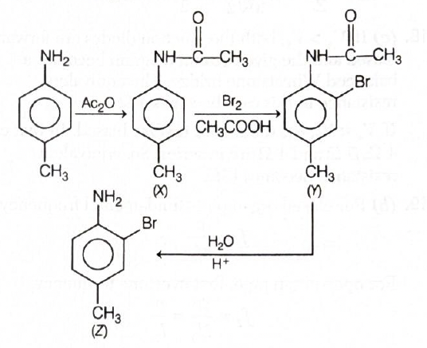
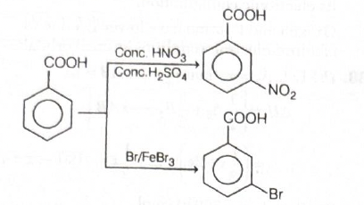
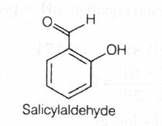
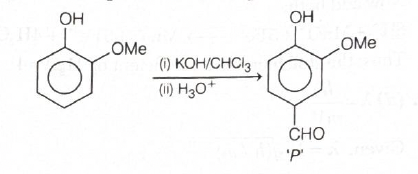

Answer: \((c)\ 16\)
Answer: \((b)\ 44.04\ \mathrm{atm}\)
Answer: \((c)\)

Answer: \((b)\ 4\ \mathrm{L\,atm}\)
Quick explanation: In a cyclic process, the gas returns to its initial state, so \(\Delta U = 0\). From the first law, \(q = W\), so the net heat absorbed is equal to the net work done, which is the area enclosed by the \(pV\) loop.
Chapter / topic / subtopic:
Thermodynamics \(\rightarrow\) Internal Energy, Heat and Work
- Page C42
Thermodynamics \(\rightarrow\) First Law of Thermodynamics -
Page C43
Solution:


